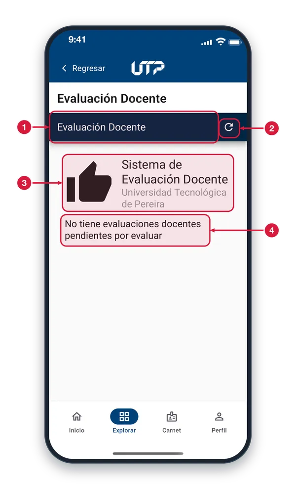

Evaluación docente
Aquí evalúas a tus docentes en el sistema de evaluación de la universidad. Entras desde Explorar, en Evaluación Docente.

- Página del sistema Esta barra y lo que sigue pertenecen a la página del sistema de evaluación docente, abierta dentro de la app con tu cuenta.
- Recargar El icono de flecha circular vuelve a cargar la página para consultar de nuevo tus evaluaciones.
- Sistema de evaluación Es el encabezado del sistema de la universidad donde se responden las evaluaciones de tus docentes.
- Sin evaluaciones pendientes Este mensaje significa que no tienes nada por responder ahora. Cuando haya evaluaciones abiertas, aparecerán en este espacio.